Code
latitude longitude
1 48.65023 -123.39852
2 54.99000 -7.32000
3 45.00767 -93.16915
4 49.86262 -97.13224
5 44.93807 -93.16851
6 44.97372 93.22742You’ll explore some R spatial viz tools below. In general, there are two important pieces to every map:
Piece 1: A dataset
This dataset must include either:
Piece 2: A background map
We need latitude and longitude coordinates to specify the boundaries for your regions of interest (eg: countries, states). This is where it gets really sticky!
In short, the code for spatial viz gets very specialized. The goal of these exercises is to:
You can skip around as you wish and it’s totally fine if you don’t finish everything. Just come back at some point to play around.
leaflet
Leaflet is an open-source JavaScript library for creating maps. We can use it inside R through the leaflet package.
This uses a different plotting framework than ggplot2, but still has a tidyverse feel (which will become more clear as we learn other tidyverse tools!).
The general steps are as follows:
leaflet() and telling it the data to use.addTiles() (the default) or addProviderTiles().addMarkers(), addPolygons()).Earlier this semester, I asked for the latitude and longitude of one of your favorite places. I rounded these to the nearest whole number, so that they’re near to but not exactly at those places. Let’s load the data and map it!
latitude longitude
1 48.65023 -123.39852
2 54.99000 -7.32000
3 45.00767 -93.16915
4 49.86262 -97.13224
5 44.93807 -93.16851
6 44.97372 93.22742You can use a “two-finger scroll” to zoom in and out.
PLAY AROUND! This map is interactive. Zoom in on one location. Keep zooming – what level of detail can you get into? How does that detail depend upon where you try to zoom in (thus what are the limitations of this tool)?
you can see people’s houses which is kind of scary.
We can change all sorts of details in leaflet maps.
# We can change the background
# Mark locations with yellow dots
# And connect the dots, in their order in the dataset, with green lines
# (These green lines don't mean anything here, but would if this were somebody's travel path!)
leaflet(data = fave_places) |>
addProviderTiles("USGS") |>
addCircles(weight = 10, opacity = 1, color = "yellow") |>
addPolylines(
lng = ~longitude,
lat = ~latitude,
color = "green"
)In general:
addProviderTiles() changes the base map.
To explore all available provider base maps, type providers in the console. (Though some don’t work :/)
Use addMarkers() or addCircles() to mark locations. Type ?addControl into the console to pull up a help file which summarizes the aesthetics of these markers and how you can change them. For example:
weight = how thick to make the lines, points, pixelsopacity = transparency (like alpha in ggplot2)The starbucks data, compiled by Danny Kaplan, contains information about every Starbucks in the world at the time the data were collected, including Latitude and Longitude:
Let’s focus on only those in Minnesota for now:
Create a leaflet map of the Starbucks locations in Minnesota. Keep it simple – go back to ✏️ Map Points with Leaflet for an example.
Leaflet is very powerful and fun. But:
Let’s explore how to make point maps with ggplot(), not leaflet().
Let’s start with the ggplot() tools we already know. Construct a scatterplot of all starbucks locations, not just those in Minnesota, with:
It’s pretty cool that the plots we already know can provide some spatial context. But what don’t you like about this plot?
Let’s add a background map of country-level boundaries.
First, we can grab country-level boundaries from the rnaturalearth package.
In your console, type world_boundaries to check out what’s stored there. Don’t print it our in your Rmd – printing it would be really messy there (even just the head()).
Run the chunks below to build up a new map.
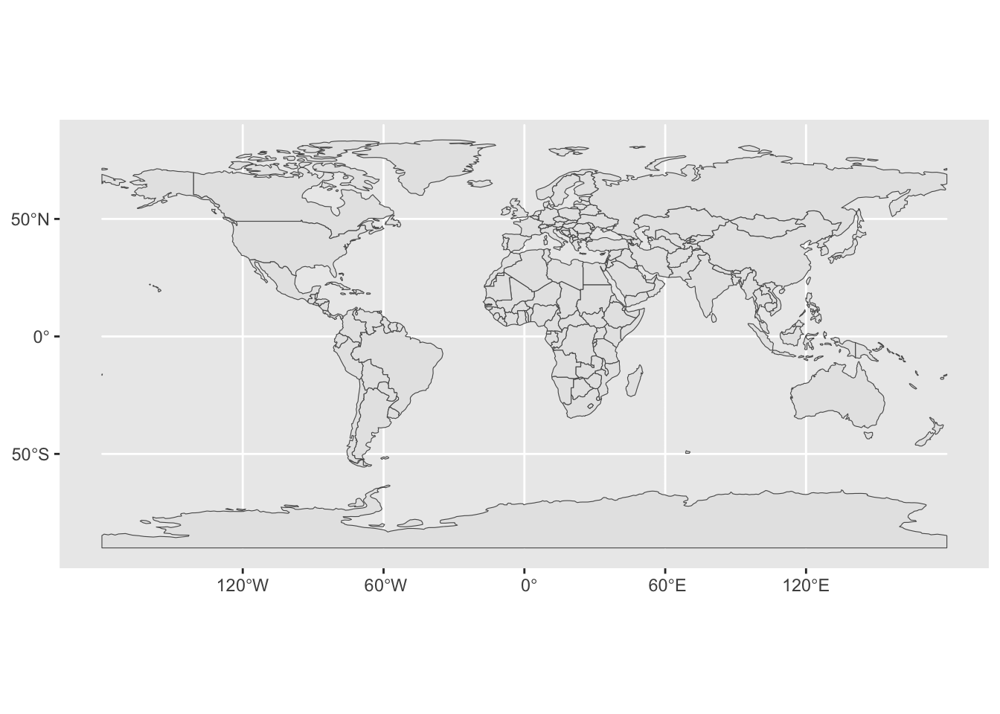
# Load package needed to change map theme
library(mosaic)
# Add a point for each Starbucks
# NOTE: The Starbucks info is in our starbucks data, not world_boundaries
# How does this change how we use geom_point?!
ggplot(world_boundaries) +
geom_sf() +
geom_point(
data = starbucks,
aes(x = Longitude, y = Latitude),
alpha = 0.3, size = 0.2, color = "darkgreen"
) +
theme_map()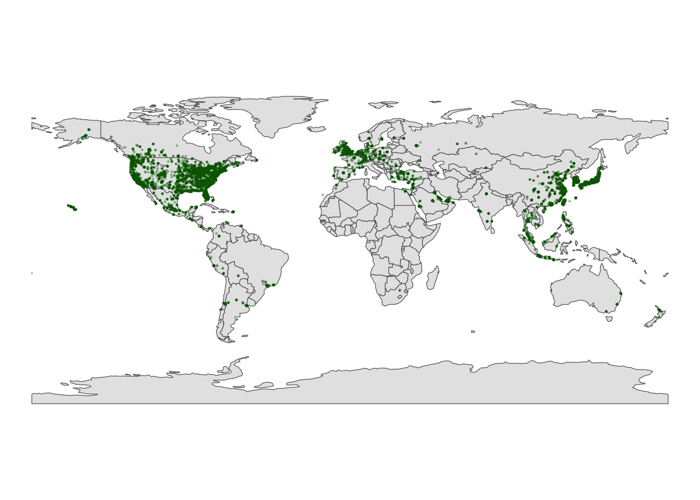
Summarize what you learned about Starbucks from this map.
The majority of starbucks are in the US, but there are also a bunch in western europe and eastern asia. Which makes sense because they are the closest to the US.1
Instead of world_boundaries <- ne_countries(returnclass = 'sf') we could zoom in on…
ne_countries(continent = 'Africa', returnclass = 'sf')
ne_countries(country = c('france', 'united kingdom', 'germany'), returnclass = 'sf')
ne_states(country = 'united states of america', returnclass = 'sf')
Our goal here will be to map the Starbucks locations in Canada, Mexico, and the US.
To make this map, we again need two pieces of information.
starbucks data.ne_states() in the rnaturalearth package where the countries are labeled ‘canada’, ‘mexico’, ‘united states of america’.Make the map!
Let’s get an even higher resolution map of Starbucks locations within the states of Minnesota, Wisconsin, North Dakota, and South Dakota, with a background map at the county-level.
To make this map, we again need two pieces of information.
st_as_sf() in the sf package, and map() in the maps package, where the countries are labeled ‘minnesota’, ‘north dakota’, etc.Simple feature collection with 6 features and 1 field
Geometry type: MULTIPOLYGON
Dimension: XY
Bounding box: xmin: -96.81268 ymin: 45.05167 xmax: -93.01397 ymax: 48.53526
Geodetic CRS: +proj=longlat +ellps=clrk66 +no_defs +type=crs
ID geom
minnesota,aitkin minnesota,aitkin MULTIPOLYGON (((-93.03689 4...
minnesota,anoka minnesota,anoka MULTIPOLYGON (((-93.51817 4...
minnesota,becker minnesota,becker MULTIPOLYGON (((-95.14537 4...
minnesota,beltrami minnesota,beltrami MULTIPOLYGON (((-95.58655 4...
minnesota,benton minnesota,benton MULTIPOLYGON (((-93.77027 4...
minnesota,big stone minnesota,big stone MULTIPOLYGON (((-96.10794 4...Adjust the code below to make the plot! Remove the # to run it.
Especially when there are lots of point locations, and those locations start overlapping on a map, it can be tough to visualize areas of higher density. Consider the Starbucks locations in Canada, Mexico, and the US that we mapped earlier:
Now check out the contour map.
# What changed in the plot?
# instead of dots for each starbucks it has topographical circles of where there is a more dense area vs less dense
# What changed in our code?!
# coordinates changed and added ovals
ggplot(cma_boundaries) +
geom_sf() +
geom_density_2d(
data = starbucks_cma,
aes(x = Longitude, y = Latitude),
size = 0.2,
color = "darkgreen"
) +
coord_sf(xlim = c(-179.14, -50), ylim = c(14.54, 83.11)) +
theme_map()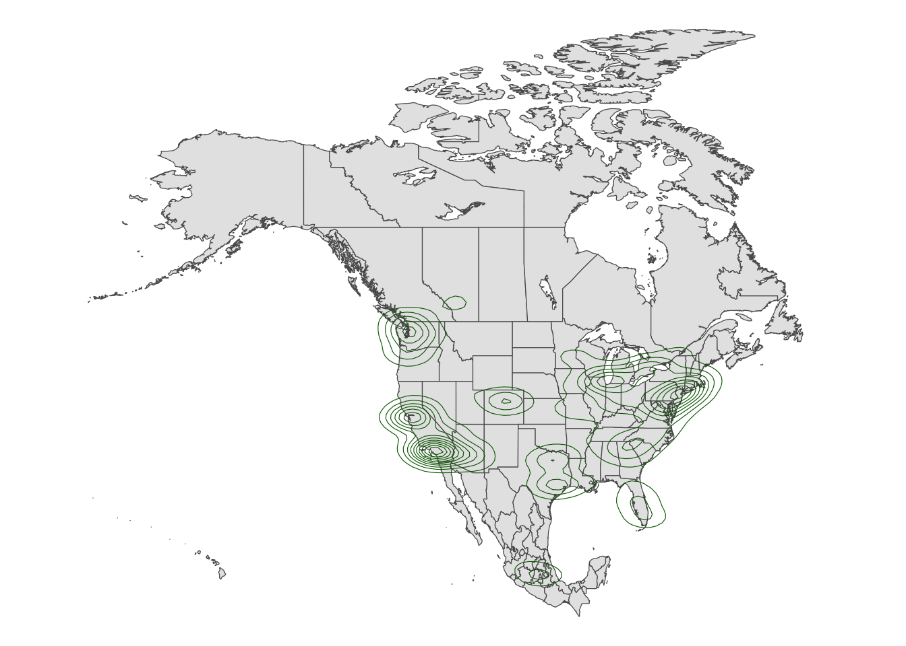
Spatial data isn’t always in the form of point locations! For example, recall the state and county-level data on presidential elections.
In these datasets, we’re interested in the overall election outcome by region (state or county), not the specific geographic location of some observation. Let’s wrangle our data first. We’ll focus on just a few variables of interest, and create a new variable (repub_20_categories) that discretizes the repub_pct_20 variable into increments of 5 percentage points (for states) or 10 percentage points (for counties):
# Don't worry about the code!
elections_by_state <- elections_by_state |>
filter(state_abbr != "DC") |>
select(state_name, state_abbr, repub_pct_20) |>
mutate(repub_20_categories =
cut(repub_pct_20,
breaks = seq(30, 70, by = 5),
labels = c("30-34", "35-39", "40-44", "45-49",
"50-54", "55-59", "60-64", "65-70"),
include.lowest = TRUE))
elections_by_counties <- elections_by_counties |>
select(state_name, state_abbr, county_name, county_fips,
repub_pct_20, median_age, median_rent) |>
mutate(repub_20_categories =
cut(repub_pct_20,
breaks = seq(0, 100, by = 10),
labels = c("0-9", "10-19", "20-29", "30-39", "40-49",
"50-59", "60-69", "70-79", "80-89", "90-100"),
include.lowest = TRUE))Let’s map the 2020 Republican support in each state, repub_pct_20.
We again need two pieces of information.
Data on elections in each state, which we already have: elections_by_state.
A background map of state boundaries in the US. The boundaries we used for point maps don’t work here. (Optional detail: they’re sf objects and we now need a data.frame object.) Instead, we can use the map_data() function from the ggplot2 package:
long lat group order region subregion
1 -87.46201 30.38968 1 1 alabama <NA>
2 -87.48493 30.37249 1 2 alabama <NA>
3 -87.52503 30.37249 1 3 alabama <NA>
4 -87.53076 30.33239 1 4 alabama <NA>
5 -87.57087 30.32665 1 5 alabama <NA>
6 -87.58806 30.32665 1 6 alabama <NA>Important detail: Note that the region variable in states_map, and the state_name variable in elections_by_state both label states by the full name in lower case letters. This is critical to the background map and our data being able to communicate.
long lat group order region subregion
1 -87.46201 30.38968 1 1 alabama <NA>
2 -87.48493 30.37249 1 2 alabama <NA>
3 -87.52503 30.37249 1 3 alabama <NA>
4 -87.53076 30.33239 1 4 alabama <NA>
5 -87.57087 30.32665 1 5 alabama <NA>
6 -87.58806 30.32665 1 6 alabama <NA> state_name state_abbr repub_pct_20 repub_20_categories
1 alabama AL 62.03 60-64
2 arkansas AR 62.40 60-64
3 arizona AZ 49.06 45-49
4 california CA 34.33 30-34
5 colorado CO 41.90 40-44
6 connecticut CT 39.21 35-39Now map repub_pct_20 by state.
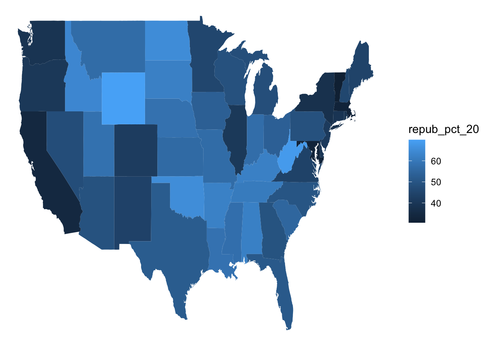
# Make it nicer!
ggplot(elections_by_state, aes(map_id = state_name, fill = repub_pct_20)) +
geom_map(map = states_map) +
expand_limits(x = states_map$long, y = states_map$lat) +
theme_map() +
scale_fill_gradientn(name = "% Republican", colors = c("blue", "purple", "red"), values = scales::rescale(seq(0, 100, by = 5)))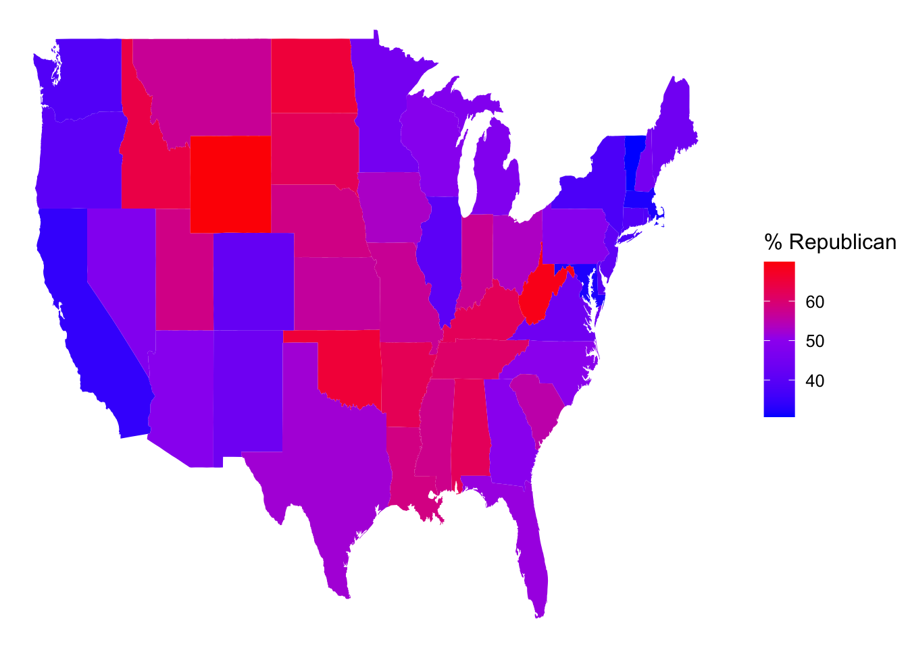
It’s not easy to get fine control over the color scale for the quantitative repub_pct_20 variable. Instead, let’s plot the discretized version, repub_20_categories:
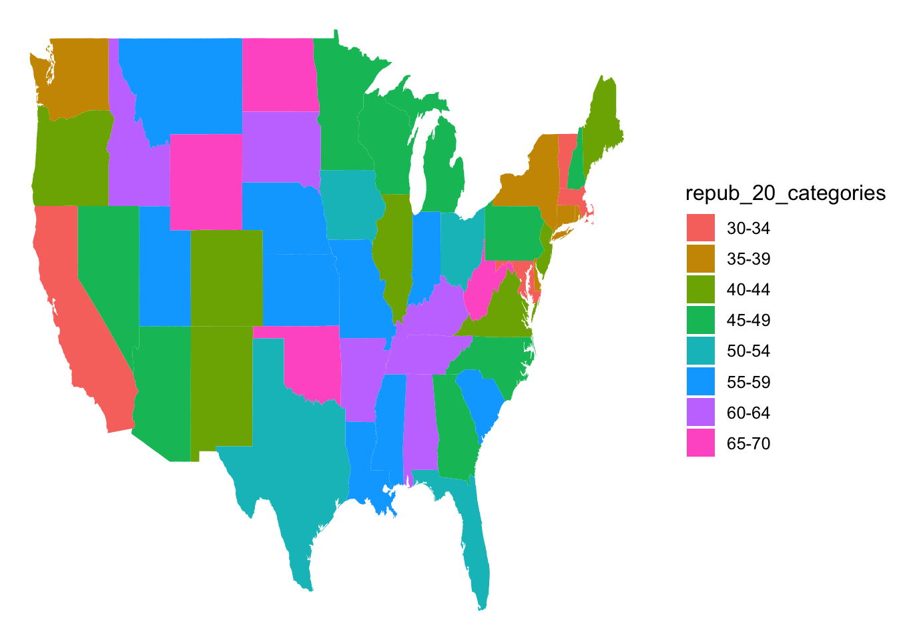
# Load package needed for refining color palette
library(RColorBrewer)
# Now fix the colors
ggplot(elections_by_state, aes(map_id = state_name, fill = repub_20_categories)) +
geom_map(map = states_map) +
expand_limits(x = states_map$long, y = states_map$lat) +
theme_map() +
scale_fill_manual(values = rev(brewer.pal(8, "RdBu")), name = "% Republican")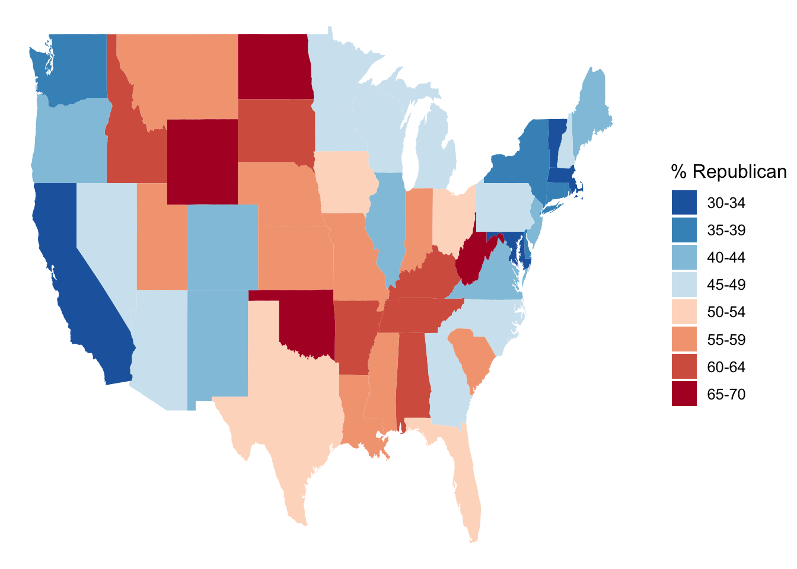
We can add other layers, like points, on top of a choropleth map. Add a Starbucks layer! Do you notice any relationship between Starbucks and elections? Or are we just doing things at this point? ;)
# Get only the starbucks data from the US
starbucks_us <- starbucks |>
filter(Country == "US")
# Map it
ggplot(elections_by_state, aes(map_id = state_name, fill = repub_20_categories)) +
geom_map(map = states_map) +
geom_point(
data = starbucks_us,
aes(x = Longitude, y = Latitude),
size = 0.05,
alpha = 0.2,
inherit.aes = FALSE
) +
expand_limits(x = states_map$long, y = states_map$lat) +
theme_map() +
scale_fill_manual(values = rev(brewer.pal(8, "RdBu")), name = "% Republican")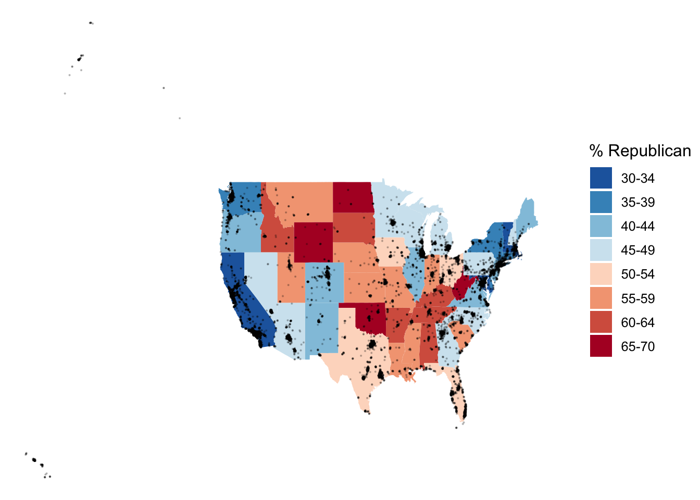
Details (if you’re curious)
map_id is a required aesthetic for geom_map().
state_name).state_name) to the region variable in our mapping background (states_map). These variables must have the same possible outcomes in order to be matched up (alabama, alaska, arizona,…).expand_limits() assures that the map covers the entire area it’s supposed to, by pulling longitudes and latitudes from the states_map.We used geom_sf() for point maps. What geom do we use for choropleth maps?
We use geom_map for choropleth maps.
Let’s map the 2020 Republican support in each county.
We again need two pieces of information.
Data on elections in each county, which we already have: elections_by_county.
A background map of county boundaries in the US, stored in the county_map dataset in the socviz package:
long lat order hole piece group id
1 1225889 -1275020 1 FALSE 1 0500000US01001.1 01001
2 1235324 -1274008 2 FALSE 1 0500000US01001.1 01001
3 1244873 -1272331 3 FALSE 1 0500000US01001.1 01001
4 1244129 -1267515 4 FALSE 1 0500000US01001.1 01001
5 1272010 -1262889 5 FALSE 1 0500000US01001.1 01001
6 1276797 -1295514 6 FALSE 1 0500000US01001.1 01001Important detail: We officially have a headache. Our county_map refers to each county by a 5-number id. Our elections_by_counties data refers to each county by a county_fips code, which is mostly the same as id, BUT drops any 0’s at the beginning of the code.
long lat order hole piece group id
1 1225889 -1275020 1 FALSE 1 0500000US01001.1 01001
2 1235324 -1274008 2 FALSE 1 0500000US01001.1 01001
3 1244873 -1272331 3 FALSE 1 0500000US01001.1 01001
4 1244129 -1267515 4 FALSE 1 0500000US01001.1 01001
5 1272010 -1262889 5 FALSE 1 0500000US01001.1 01001
6 1276797 -1295514 6 FALSE 1 0500000US01001.1 01001 state_name state_abbr county_name county_fips repub_pct_20 median_age
1 Alabama AL Autauga County 1001 71.44 37.5
2 Alabama AL Baldwin County 1003 76.17 41.5
3 Alabama AL Barbour County 1005 53.45 38.3
4 Alabama AL Bibb County 1007 78.43 39.4
5 Alabama AL Blount County 1009 89.57 39.6
6 Alabama AL Bullock County 1011 24.84 39.6
median_rent repub_20_categories
1 668 70-79
2 693 70-79
3 382 50-59
4 351 70-79
5 403 80-89
6 276 20-29This just means that we have to wrangle the data so that it can communicate with the background map.
# Add 0's at the beginning of any fips_code that's fewer than 5 numbers long
# Don't worry about the syntax
elections_by_counties <- elections_by_counties |>
mutate(county_fips = as.character(county_fips)) |>
mutate(county_fips =
ifelse(nchar(county_fips) == 4, paste0("0", county_fips), county_fips))Now map Republican support by county. Let’s go straight to the discretized repub_20_categories variable, and a good color scale.
ggplot(elections_by_counties, aes(map_id = county_fips, fill = repub_20_categories)) +
geom_map(map = county_map) +
scale_fill_manual(values = rev(brewer.pal(10, "RdBu")), name = "% Republican") +
expand_limits(x = county_map$long, y = county_map$lat) +
theme_map() +
theme(legend.position = "right") +
coord_equal()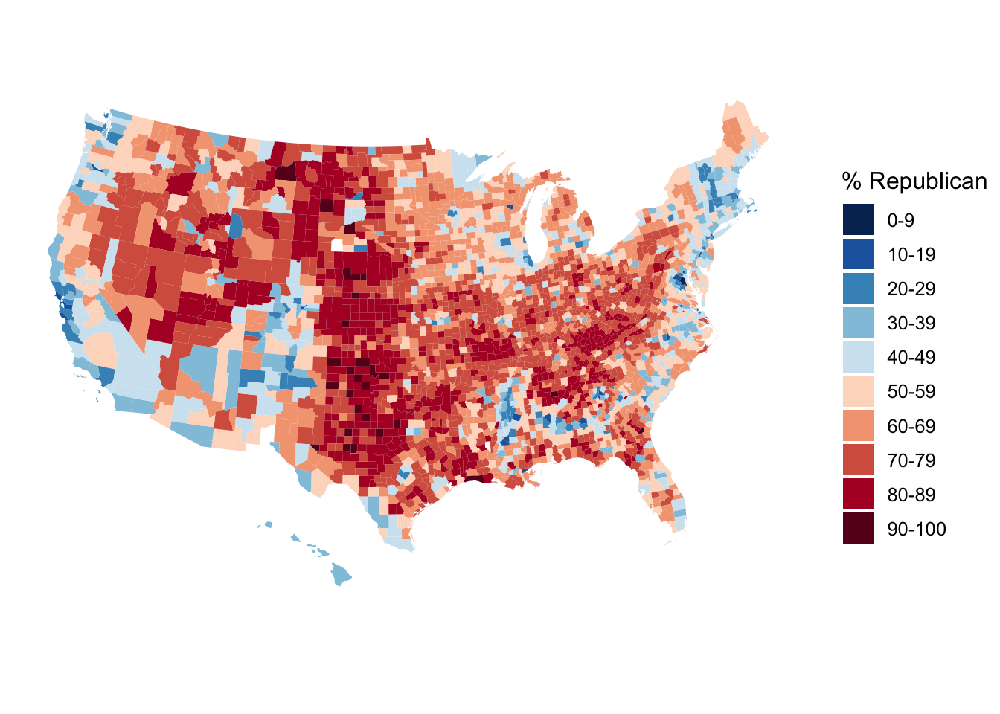
Construct a county-level map of median_rent.
ggplot(elections_by_counties, aes(map_id = county_fips, fill = median_rent)) +
geom_map(map = county_map) +
scale_fill_gradientn(name = "median rent", colors = c("lavender", "purple"), values = scales::rescale(seq(0,100, by = 10))) +
expand_limits(x = county_map$long, y = county_map$lat) +
theme_map() +
theme(legend.position = "right") +
coord_equal() 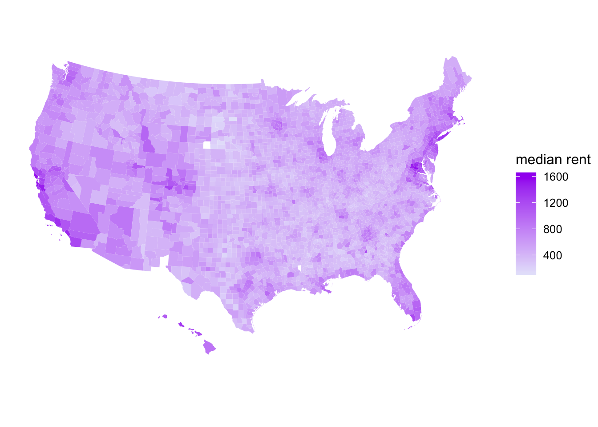
Construct a county-level map of median_age.
ggplot(elections_by_counties, aes(map_id = county_fips, fill = median_age)) +
geom_map(map = county_map) +
scale_fill_gradientn(name = "median rent", colors = c("aquamarine", "aquamarine4"), values = scales::rescale(seq(0,100, by = 10))) +
expand_limits(x = county_map$long, y = county_map$lat) +
theme_map() +
theme(legend.position = "right") +
coord_equal() 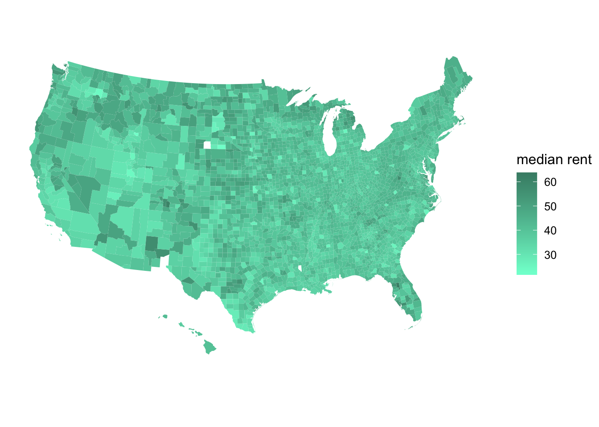
Though ggplot() is often better for this purpose, we can also make choropleth maps with leaflet(). If you’re curious, check out the leaflet documentation:
[1] "sf" "tbl_df" "tbl" "data.frame"[1] "id" "name" "density" "geometry"# From https://leafletjs.com/examples/choropleth/us-states.js
states <- sf::read_sf("https://rstudio.github.io/leaflet/json/us-states.geojson")
bins <- c(0, 10, 20, 50, 100, 200, 500, 1000, Inf)
pal <- colorBin("cividis", domain = states$density, bins = bins)
labels <- sprintf(
"<strong>%s</strong><br/>%g people / mi<sup>2</sup>",
states$name, states$density
) %>% lapply(htmltools::HTML)
leaflet(states) %>%
setView(-96, 37.8, 4) %>%
addProviderTiles("MapBox", options = providerTileOptions(
id = "mapbox.light",
accessToken = Sys.getenv('MAPBOX_ACCESS_TOKEN'))) %>%
addPolygons(
fillColor = ~pal(density),
weight = 2,
opacity = 1,
color = "black",
dashArray = "3",
fillOpacity = 0.7,
highlightOptions = highlightOptions(
weight = 5,
color = "cornflowerblue",
dashArray = "",
fillOpacity = 0.7,
bringToFront = TRUE),
label = labels,
labelOptions = labelOptions(
style = list("font-weight" = "normal", padding = "3px 8px"),
textsize = "15px",
direction = "auto")) %>%
addLegend(pal = pal, values = ~density, opacity = 0.7, title = NULL,
position = "bottomright")